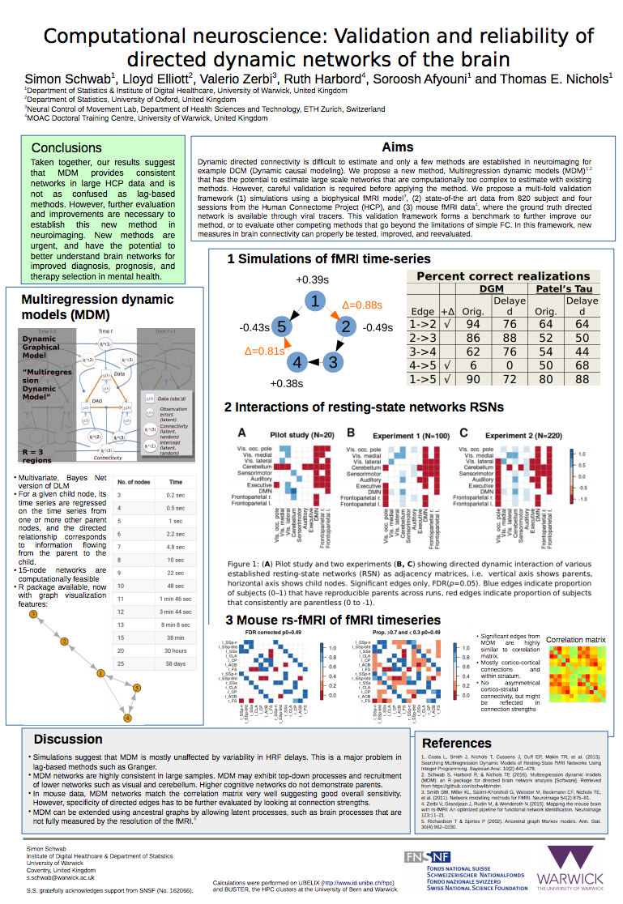

Hall of Fame
If you previously used UBELIX to do your computational work and you acknowledged this
in your publication and want to your publication listed here, please drop us a note
at hpc@id.unibe.ch.
If you are wondering how you can acknowledge the usage of UBELIX in your
publication, have a look at the homepage of this documentation, where
you will find a text recommendation acknoowledging the use of our cluster.
Papers and Articles
| Authors | Title | Journal | Boris | DOI |
|---|---|---|---|---|
| 2020 | ||||
| Riou J, Hauser A et al. | Estimation of SARS-CoV-2 mortality during the early stages of an epidemic: A modeling study in Hubei, China, and six regions in Europe | PLOS Medicine | Direct Link | |
| Ricca C, Aschauer U | Local polarization in oxygen-deficient LaMnO3 induced by charge localization in the Jahn-Teller distorted structure | Phys. Rev. Res. | Details | Direct Link |
| Burns E, Lippert T et al. | LaTiO2N crystallographic orientation control significantly increases visible-light induced charge extraction | J. Mat. Chem. A | Details | Direct Link |
| Ninova S, Aschauer U, et al. | Suitability of Cu-substituted β-Mn2V2O7 and Mn-substituted β-Cu2V2O7 for photocatalytic water-splitting | J. Chem Phys. 153 | Details | Direct Link |
| Vonrüti N, Aschauer U | Catalysis on oxidized ferroelectric surfaces—Epitaxially strained LaTiO2N and BaTiO3 for photocatalytic water splitting | Chem. Mater. | Details | Direct Link |
| Bouri M, Aschauer U | Suitability of Different Sr2TaO3N Surface Orientations for Photocatalytic Water Oxidation | Chem. Mater | Details | Direct Link |
| Flores E, Berg E, et al. | Cation Ordering and Redox Chemistry of Layered Ni-Rich LixNi1–2yCoyMnyO2: An Operando Raman Spectroscopy Study | Chem. Mater. | Details | Direct Link |
| Pawlak R, Meyer E, et al. | Bottom-up Synthesis of Nitrogen-Doped Porous Graphene Nanoribbons | J.Am.Chem.Soc. | Details | Direct Link |
| Ricca C, Aschauer U, et al. | Self-consistent DFT + U + V study of oxygen vacancies in SrTiO3 | Phys. Rev. Research 2 | Details | Direct Link |
| Ninova S, Aschauer U, et al. | Surface Orientation and Structure of LaTiO2N Nanoparticles | ACS Appl. Energy Mater | Details | Direct Link |
| Primasová H, Furrer J, et al. | Dinuclear thiolato-bridged arene ruthenium complexes: from reaction conditions and mechanism to synthesis of new complexes | RSC Advances | Details | Direct Link |
| Pfister J-P, Gontier C | Identifiability of a Binomial Synapse | Front. Comput. Neurosci. | Details | Direct Link |
| Riou J, Althaus C | Pattern of early human-to-human transmission of Wuhan 2019 novel coronavirus (2019-nCoV), December 2019 to January 2020 | Euro Surveillance | Direct Link | |
| 2019 | ||||
| Vonrüti N, Aschauer U | The role of metastability in enhancing water-oxidation activity | Phys.Chem.Chem.Phys. | Details | |
| Bizzotto F, Arenz M, et al. | Examining the Structure Sensitivity of the Oxygen Evolution Reaction on Pt Single‐Crystal Electrodes: A Combined Experimental and Theoretical Study | ChemPhysChem | Details | Direct Link |
| Vonrüti N, Aschauer U | Band-gap engineering in AB(OxS1−x)3 perovskite oxysulfides: a route to strongly polar materials for photocatalytic water splitting | J.Mat. Chem. A | Details | Direct Link |
| Ouhbi H, Aschauer U | Nitrogen Loss and Oxygen Evolution Reaction Activity of Perovskite Oxynitrides | ACS Materials Lett. | Details | Direct Link |
| Hussain H, Thornton G, et al. | Water-Induced Reversal of the TiO2(011)-(2 × 1) Surface Reconstruction: Observed with in Situ Surface X-ray Diffraction | J.Phys. Chem C | Details | Direct Link |
| Mantella V, Buonsanti R, et al. | Synthesis and Size-Dependent Optical Properties of Intermediate Band Gap Cu3VS4 Nanocrystals | Chem. Mater | Details | Direct Link |
| Aschauer U, Spaldin N, et al. | Strain-induced heteronuclear charge disproportionation in EuMnO3 | Phys. Rev. Materials 3 | Details | Direct Link |
| Ninova S, Aschauer U | Anion-order driven polar interfaces at LaTiO2N surfaces | Journal of Materials Chemistry A | Details | Direct Link |
| Ricca C, Aschauer U et al. | Self-consistent site-dependent DFT+U study of stoichiometric and defective SrMnO3 | Physical Review B | Details | Direct Link |
| Ouhbia H, Aschauer U | Water oxidation catalysis on reconstructed NaTaO3 (001) surfaces | Journal of Materials Chemistry A | Details | Direct Link |
| Counotte M, Althaus C et al. | Impact of age-specific immunity on the timing and burden of the next Zika virus outbreak | PLOS NeglectedTropical Diseases | Details | Direct Link |
| Brugger J, Althaus C | Transmission of and susceptibility to seasonal influenza in Switzerland from 2003 to 2015 | Epidemics, Elsevier | Details | Direct Link |
| 2018 | ||||
| Horton P, Brönnimann S | Impact of global atmospheric reanalyses on statistical precipitation downscaling | Climate Dynamics | Details | Direct Link |
| Vonrüti N, Aschauer U | Epitaxial strain dependence of band gaps in perovskite oxynitrides compared to perovskite oxides | American Physical Society | Details | Direct Link |
| Aschauer U | Ultrafast Relaxation Dynamics of the Antiferrodistortive Phase in Ca Doped SrTiO₃ |
American Physical Society | Details | Direct Link |
| Vonrüti N, Aschauer U, et al. | Elucidation of LixNi0.8Co0.15Al0.05O2 Redox Chemistry by Operando Raman Spectroscopy | American Chemical Society | Details | Direct Link |
| Ouhbi H, Aschauer U | Water oxidation chemistry of oxynitrides and oxides: Comparing NaTaO3 and SrTaO2N | Surface Science | Details | Direct Link |
| Aschauer U | Surface and Defect Chemistry of Oxide Material | CHIMIA | Details | Direct Link |
| Kasper, C, Hebert, F, Aubin-Horth N, Taborsky B | Divergent brain gene expression profiles between alternative behavioural helper types in a cooperative breeder | Wiley Molecular Ecology | Direct Link | |
Panyasantisuk J, |
Mapping anisotropy improves QCT-based finite element estimation of hip strength in pooled stance and side-fall load configurations | Medical Engineering & Physics, |
Direct Link | |
| Vonrüti, N, Aschauer U | Anion Order and Spontaneous Polarization in LaTiO2N Oxynitride Thin Films | American Physical Society | Details | Direct Link |
| Bouri M, Aschauer U | Bulk and surface properties of the Ruddlesden-Popper oxynitride Sr2TaO3N | Physical Chemistry Chemical Physics | Details | Direct Link |
| 2017 | ||||
| Aschauer, U et al. | Surface Structure of TiO2 Rutile (011) Exposed to Liquid Water | Journal of Physical Chemistry | Details | Direct Link |
| Kasper, C, Kölliker, M, Pstma, E, Taborsky B | Consistent cooperation in a cichlid fish is caused by maternal and developmental effects rather than heritable genetic variation | Proceedings of the Royal Society, Biological Sciences | Direct Link | |
| Riesen M, Garcia V, Low N, Althaus C | Modeling the consequences of regional heterogeneity in human papillomavirus (HPV) vaccination uptake on transmission in Switzerland | Vaccine, Elsevier | Details | Direct Link |
| Kilic C, Raible C, Stocker T | Multiple climate States of Habitable Exoplanets: The Rolf of Obliquity and Irradiance | The Astrophysical Journal | Details | Direct Link |
| Kilic C, Raible C, Kirk | Impact of variations of gravitational acceleration on the general circulation of the planetary atmosphere | Planetary and Space Science | Details | Direct Link |
| Mueller S, Fix M et al. | Simultaneous optimization of photons and electrons for mixed beam radiotherapy al. | Physics in Medicine & Biology | Direct Link | |
| Ninova S, Aschauer U | Surface structure and anion order of the oynitride LaTiO2N | Journal of Materials Chemistry A | Details | Direct Link |
| Ninova S, Aschauer U et al. | LaTiOxNy Thin Film Model Systems for Photocatalytic Water Splitting: Physicochemical Evolution of the Solid-Liquid Interface and the Role of the Crystallographic Orientation |
Advanced functional materials | Details | Direct Link |
| Struchen R, Vial F, Andersson M. G. | Value of evidence from syndromic surveillance with cumulative evidence from multiple data stream with delayed reporting | Scientific Reports | Direct Link | |
| 2013 | ||||
| Leichtle A, Fiedler G et al. | Pancreatic carcinoma, pancreatitis, and healthy controls: metabolite models in a three-class diagnostic dilemma | Metabolomics, Springer | Details | Direct Link |
Posters

Newspapers
| Title | Newspaper | Year of Publication | Link |
|---|---|---|---|
| Berner Forscher entdecken neue Klimazustände, in denen Leben möglich ist. | Der Bund | Direct Link |